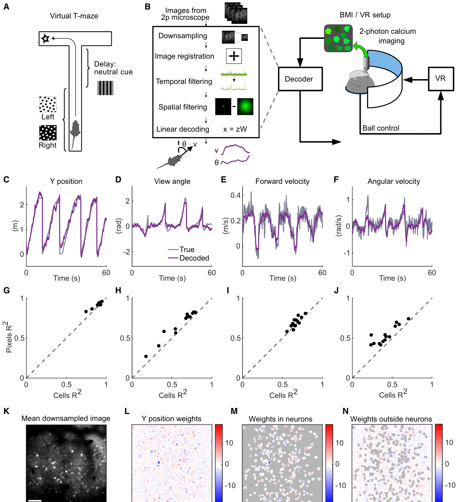
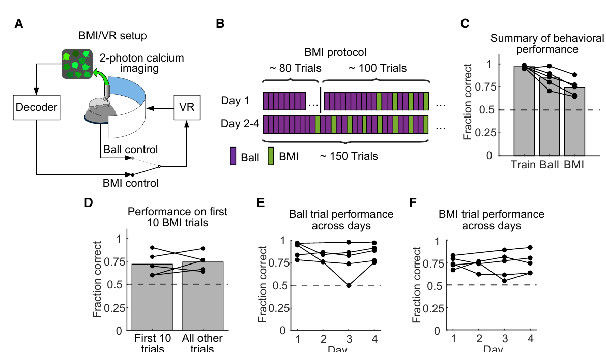
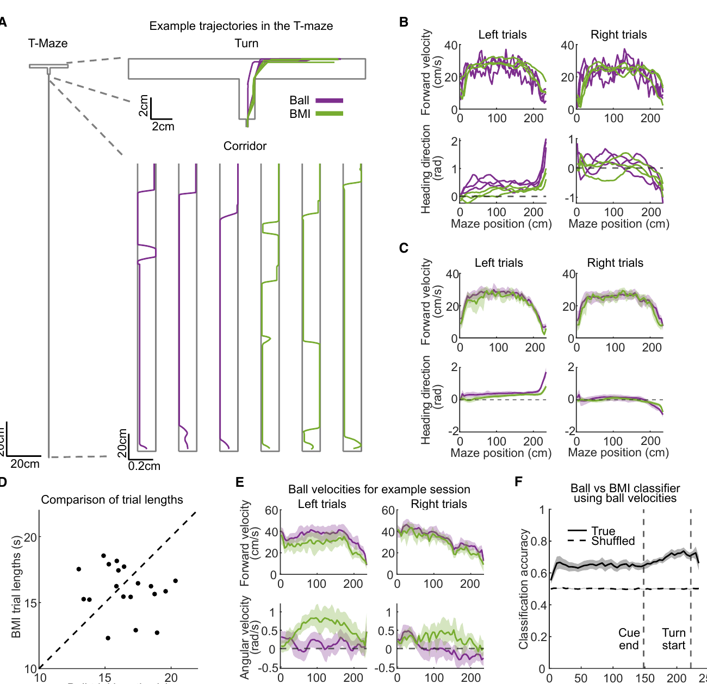
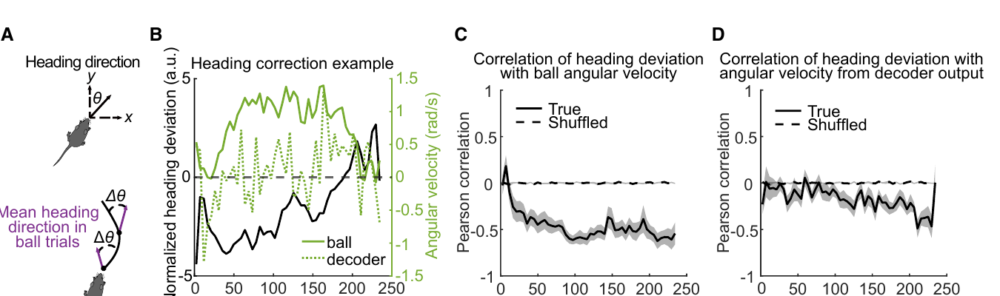
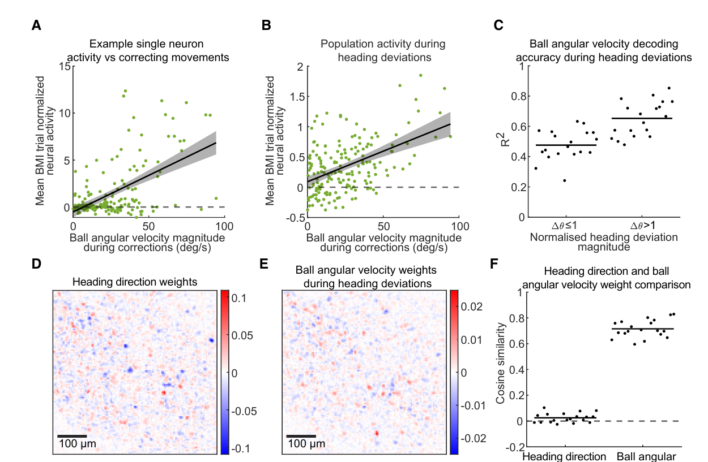
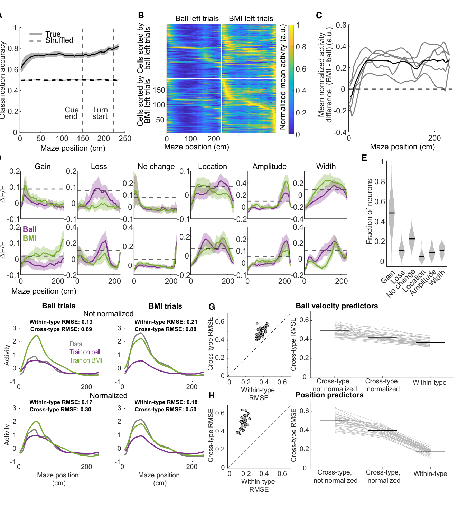

The big idea: the scientists put mice in a virtual maze, watched a planning part of the brain light up, and used that brain activity to steer the maze directly. Not the mouse's feet. The brain signal itself.
🧠The brain area was the posterior parietal cortex, a region involved in steering, planning, and choosing where to go.
🎮The mouse still saw a virtual maze and still wanted the reward at the correct end.
🕹️On special trials, the virtual world moved because of decoded brain activity, not because the ball under the mouse moved it.
Analogy: imagine playing a driving game. Usually the steering wheel controls the car. Here, the researchers unplugged the wheel and plugged in a live readout of the driver's navigation brain instead.
The trick: first they let the mouse run normally. While it played the maze, they learned the brain pattern that usually goes with "go forward" and "face this way." Then they froze that decoder and used it as the controller.
👀Camera-like brain imaging watched many activity spots at once.
🧮A simple decoder translated the activity pattern into movement commands.
🔒The decoder was fixed, so the mouse did not get a long practice period to invent a new brain trick.
Analogy: it is like watching someone's hands on a steering wheel for a while, learning what "left" and "right" look like, then suddenly using that pattern to steer the game yourself.
The surprising part: the mice could use the brain-machine interface right away. They did not need a long "learn the weird new controller" phase. Their normal navigation brain activity was already good enough to move the virtual mouse toward the goal.
🚦Normal trials and brain-control trials were mixed together.
🏁The mice still chose the correct goal more than guessing.
📌That matters because a working controller is stronger evidence than a passive brain recording.
Analogy: if a car follows your GPS predictions in real time, that is stronger than saying your GPS map happened to match where the car already went.
The clever sanity check: the mouse's feet did not become irrelevant. When the virtual heading went off course, the mouse often tried to correct on the ball. But those foot corrections were not the same thing as the brain signal driving the virtual turn.
🛞The ball still recorded what the mouse tried to do physically.
↩️Those physical corrections showed the mouse was paying attention, not sleepwalking through a memorized routine.
🧭The brain decoder seemed closer to "where I intend to head" than to "what my feet are doing this instant."
Analogy: your hands may twitch when a self-driving car drifts, but the car's steering system is still separate from your twitch. The twitch proves you noticed the drift.
The punchline: this paper is trying to fill the missing causal link. Prior work showed this brain area correlates with navigation and that disrupting it hurts navigation. This study shows that directly routing its activity into motion can actually steer a goal-directed task.
✅It is not "we found a brain signal after the fact."
🔁It is "we put that signal inside the control loop."
🧪The claim still belongs to this special virtual-reality setup, not every natural behavior in the world.
Analogy: hearing engine noise tells you a car is moving. Wiring engine output to the wheels and watching the car drive tells you the engine can actually move it.
TL;DR
The paper shows that normal activity in mouse posterior parietal cortex can be decoded fast enough to steer a virtual navigation task, suggesting this brain area is not just watching navigation happen - it can help drive the intended path.
The Question
Posterior parietal cortex activity is full of navigation-related signals: position, heading, movement, visual context, and planned actions. The hard question is causal: does this activity merely report what the animal is doing, or can it directly drive goal-directed navigation?
Sorrell et al. test this by closing the loop: they decode posterior parietal cortex activity in real time and route the decoded heading direction plus forward velocity into the virtual reality engine.
Key Concepts
Click a card to expand the exact role each idea plays in the paper.
Interactive Widget: The Closed Loop
The core experiment is not a one-way recording. It is a loop where the decoded brain signal changes the virtual world, and the updated world changes the next brain state.
1. See cue and maze
The mouse sees a cue in a virtual T-maze and needs to turn into the rewarded arm.
Surface layer
Visible object: cue, corridor, T-junction, and goal arm.
The decisive move is routing decoded brain activity back into the virtual reality engine. If posterior parietal cortex activity only reports the current state, the BMI should drift or fail. If it carries a predictive navigation command, it can keep steering.
The fixed decoder makes the test sharper: the mice were not given a long period to learn an arbitrary new controller.
Method: From Brain Movie To Virtual Motion
The decoder was deliberately simple and fast. The authors used full-frame pixel activity rather than waiting for perfect cell segmentation, then decoded heading direction and forward velocity for real-time control.
5male mice, 8-12 weeks old before surgery
30 Hztwo-photon acquisition and closed-loop update rate
225 cmvirtual corridor length in the T-maze task
every 3rdtrial was a BMI trial during testing
1. Image PPC
Layer 2/3 posterior parietal cortex was imaged with jGCaMP7f during virtual navigation.
2. Clean frames
Frames were downsampled, registered, temporally filtered, and spatially filtered online.
3. Train weights
Linear regression learned how activity predicted position, heading, and velocities on held-out ball trials.
4. Output commands
The BMI used decoded virtual heading direction and forward velocity as control signals.
5. Drive VR
On BMI trials, the virtual maze updated from decoder output instead of treadmill rotation.

Figure 1 evidence: the paper's offline decoder pipeline and performance checks.

Figure 2 evidence: the closed-loop BMI setup and interleaved ball/BMI testing protocol.
Results: What Worked
The first result is that posterior parietal cortex activity contained enough information to decode navigation variables. The second, stronger result is that the decoded activity could control behavior in closed loop.
maze position
R2 0.91 ± 0.01
heading direction
R2 0.69 ± 0.06
forward velocity
R2 0.67 ± 0.03
angular velocity
R2 0.53 ± 0.04
Closed-loop result: mice performed above chance from the onset of BMI use, including the first 10 BMI trials across all 5 mice (binomial test, p = 0.0013). Across each mouse's BMI trials, all 5 mice were significantly above chance.
Interactive Widget: Ball Control Versus BMI Control
The important distinction is what drives the virtual maze. In ball trials, treadmill rotation moves the virtual world. In BMI trials, treadmill rotation is recorded but does not drive the maze.
Physical ball route
The ball signal controls virtual heading and forward velocity. Physical movement and virtual motion are coupled.
Virtual maze route
The virtual trajectory is the same stream the mouse sees and acts on.

Figure 3 evidence: virtual trajectories can look task-appropriate while physical running trajectories differ between ball and BMI trials. Correct trial lengths were comparable: 16.5 ± 0.8 s for ball and 15.8 ± 0.7 s for BMI.
The Correction Test
The authors needed to rule out a boring explanation: maybe mice simply replayed memorized running patterns. The correction analysis shows the opposite: mice physically reacted when the BMI trajectory deviated.
large
Virtual heading error
The BMI path is offset from the usual ball-control path at the same maze location.
Mouse ball correction
The mouse turns the ball in the opposite direction, as if trying to correct the error.
Decoder correction
The decoder output corrects more weakly in the immediate moment, showing a decoupling from raw movement.

Figure 4 evidence: heading deviation is negatively correlated with ball angular velocity across most maze bins, while decoder output shows weaker immediate correction.

Figure 5 evidence: PPC contains signals for corrective physical movements, but the BMI heading decoder and ball angular velocity decoder use nearly independent weight patterns.
Distinct Signals Inside PPC
The paper's most useful mental model is not "PPC equals movement." It is a mixed population where movement-related signals and navigational heading signals can be separated by different decoders.
Heading decoder weights
Used online to drive virtual heading during BMI trials.
Corrective movement weights
Trained offline to decode ball angular velocity during correction events.
The reported cosine similarity between heading-direction weights and corrective ball-angular-velocity weights was 0.026 ± 0.01, while cross-validations of the movement decoder were 0.72 ± 0.02. That is the numeric backbone of the "separate signals" claim.
BMI Is A Different Brain State, Not A Total Remap
The BMI context changed neural activity. Population activity could distinguish ball from BMI trials, and activity was elevated during BMI trials. But the organization was not completely destroyed, which is why the fixed decoder still worked.
19BMI sessions from 5 mice in the main closed-loop analyses
0.79fraction of neurons with increased activity on BMI trials, ± 0.05
50spatial bins used for many trajectory and neural analyses
4 daysfixed-decoder testing sequence shown across days

Figure 6 evidence: neural activity increased during BMI trials, but tuning relationships were largely compatible with the decoder.
Implications
If you study circuits
This is a causal assay for a high-level cortical population: put the signal inside the behavioral loop and see whether behavior still works.
If you build BMIs
The result shows that an optical, fixed decoder can drive a complex virtual task without a long retraining phase, at least in this constrained setting.
If you read PPC papers
The findings support the view that posterior parietal cortex carries planned trajectory signals, not merely sensory or motor readouts.
If you worry about causality
The paper complements inhibition studies: disruption asks whether the area is necessary; BMI control asks whether the activity can be sufficient in context.
Limits
BMI context onlyThe authors do not claim PPC controls natural behavior in exactly the same way as it controls this BMI setup.
Performance gapMice performed better on ball trials than BMI trials, likely because decoding was imperfect and calcium signals are slower than spikes.
Simple decoderThe linear decoder is efficient and interpretable, but more complex or dynamical decoders might perform better at the cost of speed.
Optical latencyThe system ran at the two-photon acquisition rate, and calcium indicator dynamics impose their own response limits.
Small animal setThe main experiments used five mice, which is typical for this kind of systems neuroscience study but still constrains generalization.
Quiz
1. Why is closed-loop BMI control stronger evidence than offline decoding?
Correct: closed-loop control is unforgiving. If decoded activity only mirrors the current state, accumulated errors can destabilize the virtual trajectory.
2. What did the correction analysis add?
Correct: the mouse's corrective ball movements reveal online engagement with the virtual trajectory, even though the ball no longer drives the maze.
3. Why did the authors emphasize a fixed decoder?
Correct: if the decoder had been slowly learned, success could reflect adaptation to a new interface rather than the native navigational content of PPC activity.
comment/feedback
Use the floating feedback panel to highlight text, select a page element, attach a note, and submit comments in a batch. The local review server saves those comments so Codex can apply scoped edits to this explainer.
open the panel
Use the button below or the floating launcher after the feedback runtime is injected.
attach a note
Highlight confusing wording or select a visual block, then write what should change.
submit batch
Send comments together so related edits can be handled in one pass.